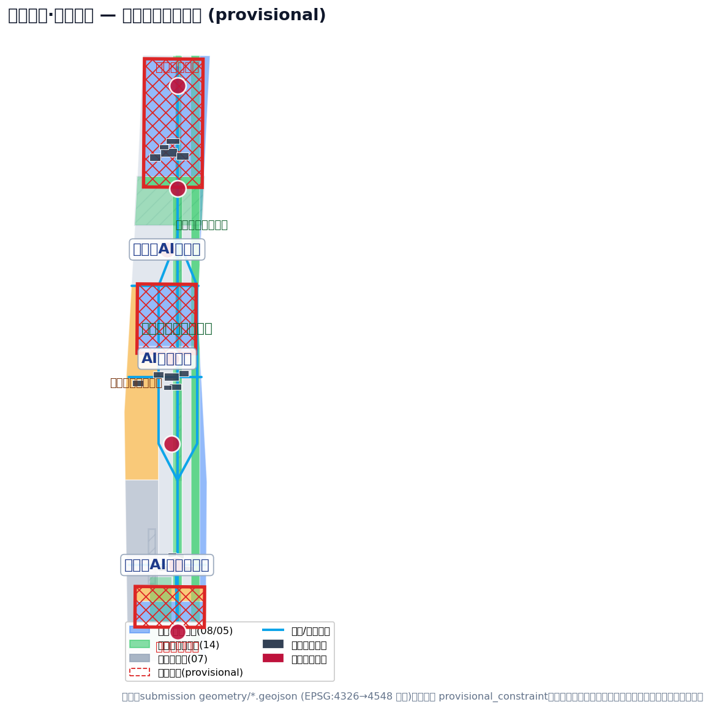
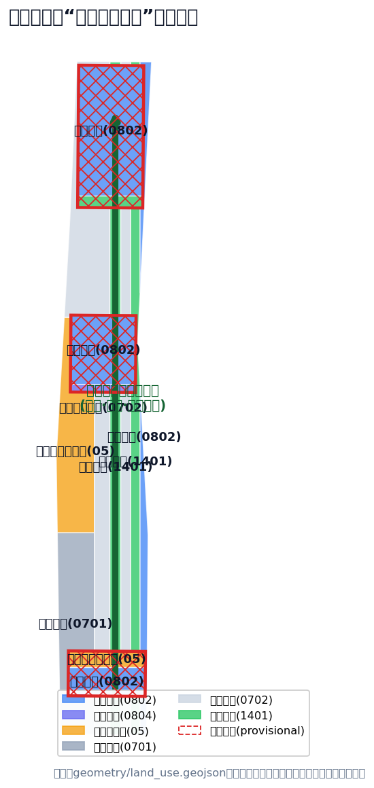
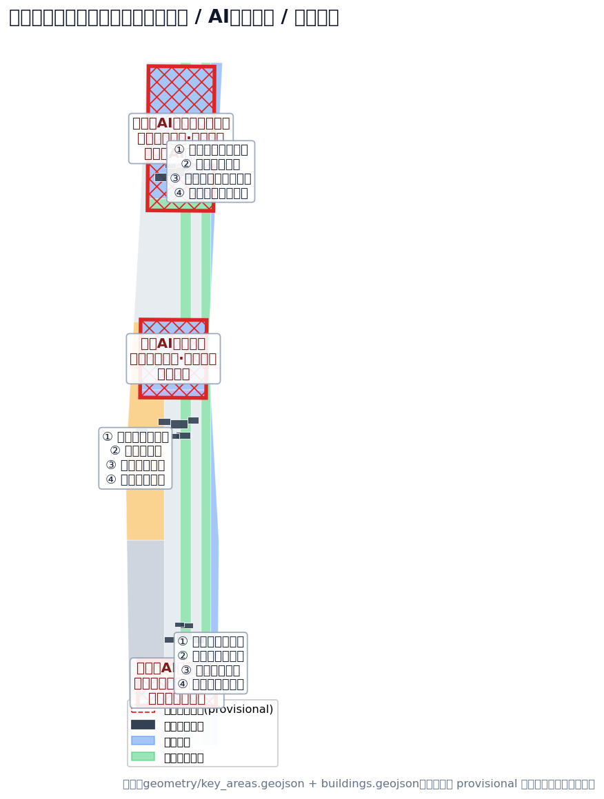
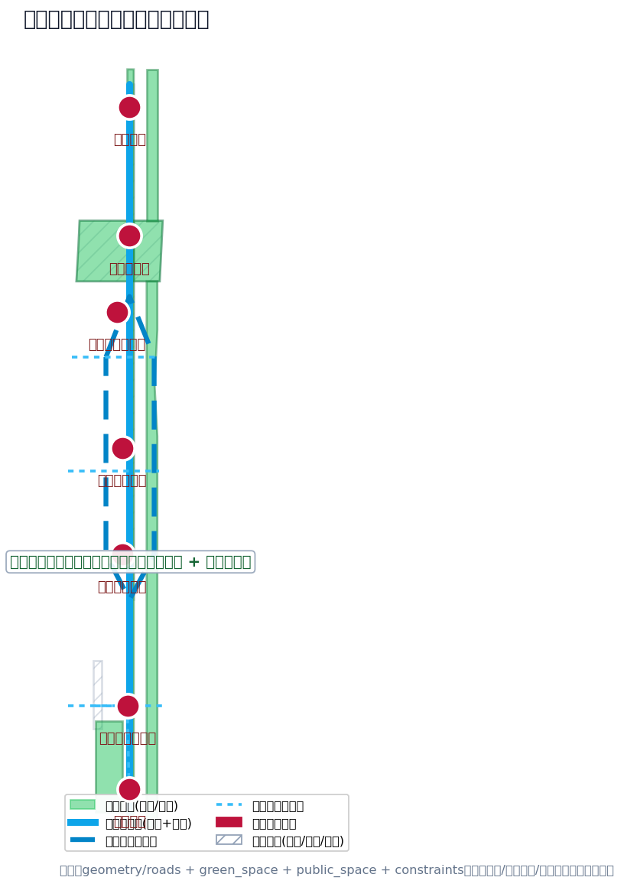
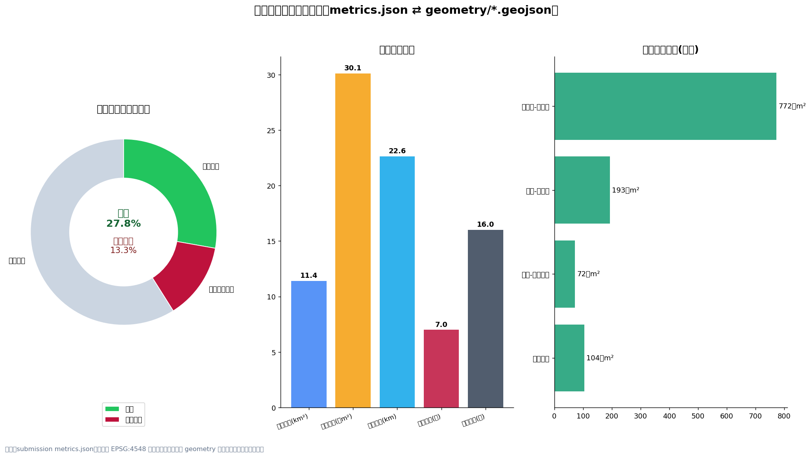

京张智带·世纪回响：百年京张AI创新带概念性城市设计
以京张遗址公园活力带为主轴、众智园/北京AI原点社区/大钟寺三处重点片区为创新锚点、中关村科技服务翼与小月河场景赋能翼为双翼，提出“一带三核、双翼多点、蓝绿慢行复合环”的百年京张AI创新带概念性城市设计方案；所有空间落地建议均为概念建议，边界为 provisional，待官方红线补齐后复算。
京张智带·世纪回响：百年京张AI创新带概念性城市设计
设计依据与资料清单
本方案由 AI 智能体依据公开或清权资料生成，依据包括：北京市规划和自然资源委员会海淀分局发布的《百年京张AI创新带城市设计国际方案征集资格预审公告》[source:OFFICIAL-ANNOUNCEMENT]、面向全球智能体的开源征集任务书摘录 [source:AGENT-TASKBOOK]、仓库维护者整理的站点包 [source:SITE-PACKAGE]、公开资料来源登记表 [source:SOURCE-REGISTRY] 与处理后的事实包 [source:PROCESSED-FACT-PACK]。设计范围、面积、任务与成果深度以公告 1.3、1.4、1.5 节为准 [standard:PROJECT-OFFICIAL-ANNOUNCEMENT][source:OFFICIAL-ANNOUNCEMENT]，智能体共创原则、三大定位、五大功能、三区两翼与六项智能体任务以任务书为准 [standard:PROJECT-AGENT-OPEN-CALL-TASKBOOK][source:AGENT-TASKBOOK]，城市设计深度与公共空间控制方法遵循《城市设计管理办法》[standard:MOHURD-URBAN-DESIGN-MEASURES][source:MOHURD-URBAN-DESIGN-MEASURES]，控规深度遵循《城市、镇控制性详细规划编制审批办法》[standard:MOHURD-CONTROL-DETAILED-PLANNING][source:MOHURD-CONTROL-DETAILED-PLANNING]，用地分类遵循《国土空间调查、规划、用途管制用地用海分类指南》[standard:MNR-LAND-USE-CLASSIFICATION-GUIDE][source:MNR-LAND-USE-CLASSIFICATION-GUIDE]，建筑方案表达深度参照《建筑工程设计文件编制深度规定》[standard:MOHURD-ARCH-DESIGN-DEPTH-2016][source:MOHURD-ARCH-DESIGN-DEPTH-2016]（该标准本地参考待补，仅作方法性参照，不作为正式依据）。
**边界状态声明（重要）**：截至本方案提交，仓库未取得官方精确 SITE_BOUNDARY 与三处 KEY_AREA 多边形，本方案使用 brief/site-package/geometry/provisional_boundaries.geojson 中明确标注的临时粗略边界 [source:BOUNDARY-SOURCE][source:KEY-AREA-SOURCE]。geometry/site_boundary.geojson#SITE-001 与 geometry/key_areas.geojson#PROV-KEY-001/002/003 均标注为 provisional_constraint、official_boundary=false、boundary_precision=provisional_rough，仅用于方案生成、可视化与提交自检，不得作为 official redline、审批依据或精确面积复算依据；组织方数据缺口不阻断内容评分，官方多边形发布后全部空间图层与指标需按 [depth:metrics_recalculation] 统一复算。
资料登记边界：data/source_registry.json 显示 formal 可用资料 5 条、provisional-only 资料 1 条 [source:SOURCE-REGISTRY]。本方案仅将公告、任务书、城市设计管理办法、控规编制办法、用地分类指南用于任务依据与设计方法；任何 spatial control、面积、比例与规模判断都从本提交包的 GeoJSON 复算（[metric:site_area_sqm][metric:green_ratio][metric:public_space_ratio]），缺官方底数的事项全部在 [depth:risk_missing_data] 与 assumptions.json 中披露。

三层范围工作框架
按公告 1.4 与 1.5，本方案以三层范围组织工作 [depth:three_level_scope_framework][standard:PROJECT-OFFICIAL-ANNOUNCEMENT]：
| 层级 | 范围与面积 | 工作目标 | 设计深度 | 本方案落点 | | --- | --- | --- | --- | --- | | 统筹研究范围 | 43.6 km²，北至北五环、东至京藏高速、南至西直门外大街、西至万泉河路 | AI 产业生态、三区两翼协同、未来城市形态、命名与Logo、文化叙事 | 产业与未来城市研究 | 本章节与"统筹研究范围产业与未来城市研究" | | 总体设计范围 | 11.4 km²，京张遗址公园周边 1-2 公里 | 城市更新总体框架、用地结构、交通市政、京张遗址公园活力带、城市风貌 | 控规深度城市设计 [standard:MOHURD-CONTROL-DETAILED-PLANNING] | [data:geometry/land_use.geojson#LU-BELT] 等全部图层 | | 重点区域范围 | 368.4 ha，三处重点片区 | 三片区功能业态、建筑规模、拆改留分类、公共空间、交通组织 | 规划综合实施方案的城市设计深度 [depth:three_key_area_detailed_design] | [data:geometry/key_areas.geojson#PROV-KEY-001] 等 |
三层范围的空间证据：统筹研究范围暂以 [data:geometry/site_boundary.geojson#SITE-001] 与公告文字四至表达；总体设计范围即提交边界；重点区域范围即 [data:geometry/key_areas.geojson#PROV-KEY-001]、[data:geometry/key_areas.geojson#PROV-KEY-002]、[data:geometry/key_areas.geojson#PROV-KEY-003]。三层逐级落实：产业战略→总体空间结构→重点片区详细设计，每级都有对应图层、指标与矩阵项（[depth:overall_spatial_structure][depth:land_use_layout]）。

统筹研究范围产业与未来城市研究
总体概念：京张智带·世纪回响（Jing-Zhang Smart Belt · Century Echo）
本方案提出一带总体概念"**京张智带·世纪回响**"：以百年京张铁路"人类工业文明第一次大规模自主工程"的历史回响为文化母题，以"从蒸汽驱动的轨道，到智能驱动的算力"为叙事主线，将统筹研究范围组织为**一条文化-生态-创新复合轴带** [depth:overall_spatial_structure]。
**命名体系（agent.1）**：
- 主名称：**京张智带**（英文：**Jing-Zhang Smart Belt**）
- 概念副题：**世纪回响**（英文：**Century Echo**）
- 片区命名：众智园（North Core / 全栈之核）、AI原点社区（Origin Community / 原点之核）、大钟寺（Grand Bell District / 回响之核）
- 两翼命名：中关村科技服务翼（Zhongguancun Service Wing / 赋能之翼）、小月河场景赋能翼（Xiaoyue River Scenario Wing / 体验之翼）
- Logo 方向：以"钢轨+铁轨枕木+神经突触"同构图形为核心符号——两条平行轨道线象征百年京张铁轨，中间以脉冲节点串接，寓意"轨道即算力、历史即底座"；色彩取"京张铁灰+中关村靛蓝+AI 脉冲青绿"三色系 [depth:overall_spatial_structure]。
**三大定位**：百年京张文化带、都市AI生活体验带、AI融合创新带；**五大功能**：AI全栈自主创新体系、世界级AI创新生态、AI+场景赋能新范式、智能化AI活力城市、AI治理全球话语权 [source:AGENT-TASKBOOK]。
**三区两翼协同回路**：众智园（全栈自主+安全治理）→AI原点社区（策源转化+开源生态）→大钟寺（智能原生+国际交往），两翼分别承担"要素全球化配置与资本/IP赋能"（中关村翼）与"AI场景赋能与城市体验"（小月河翼），形成"策源-转化-产业化-场景化-全球传播"的闭环回路 [source:AGENT-TASKBOOK]。对应空间落点：[data:geometry/land_use.geojson#LU-N1]（众智园全栈研发）、[data:geometry/land_use.geojson#LU-M1]（原点社区成果转化）、[data:geometry/land_use.geojson#LU-S1]（大钟寺智能原生）、[data:geometry/land_use.geojson#LU-W1]（中关村翼）、[data:geometry/land_use.geojson#LU-E2]（小月河翼）。
全球 AI 创新生态案例（agent.2，5-8 个）
以下案例均为公开报道中可查证的世界级创新生态组织模式，本方案仅提炼其**可转化机制**，不涉及具体企业与未清权信息 [source:SOURCE-REGISTRY]：
1. **美国硅谷 / 斯坦福-沙丘路模式**：大学策源+风险资本+创始人社区闭环。可转化：原点社区"近校成果转化街"与中关村翼"资本客厅"联动（[data:geometry/land_use.geojson#LU-M1][data:geometry/land_use.geojson#LU-W1]）。 2. **以色列特拉维夫创新生态**：小型精英团队+政府引导+全球市场导向。可转化：众智园安全治理沙盒与标准工作坊机制（[data:geometry/land_use.geojson#LU-N1]）。 3. **英国伦敦科技城（Tech City）**：历史街区更新+创意阶层聚集。可转化：京张遗址公园活力带沿线的"轨道遗产+创意空间"更新策略（[data:geometry/land_use.geojson#LU-BELT]）。 4. **新加坡纬壹科技城（One-North）**：园区-社区-生态三位一体、混合功能街区。可转化：众智园"花园型AI创新街区"的职住商服混合布局（[data:geometry/land_use.geojson#LU-N3][data:geometry/land_use.geojson#LU-N4]）。 5. **韩国首尔 DMC / 板桥（Pangyo）**：国家算力与产业平台集中供给。可转化：众智园国家AI平台与端侧算力驿站体系（[data:geometry/land_use.geojson#LU-N1]）。 6. **法国 Station F（巴黎）**：大型单体孵化器+全球创业社区运营。可转化：大钟寺"智能原生业态旗舰楼+国际路演客厅"复合载体（[data:geometry/land_use.geojson#LU-S1]）。 7. **日本京都"学问之城"**：大学与城市深度融合、传统与现代共生。可转化：原点社区校区-园区-街区慢行缝合与低扰动更新（[data:geometry/land_use.geojson#LU-M2]）。
**产业-空间映射**：AI全栈创新链（算法-算力-数据-模型-应用-治理）分别落位众智园（算法/算力/治理）、原点社区（模型/开源/人才）、大钟寺（应用/终端/数据要素）、中关村翼（资本/IP/服务）、小月河翼（场景/体验），与 compliance_matrix.json 中 agent.2 条目对应 [depth:land_use_layout]。用地结构指标：科研用地约 372.7 万 m²（[metric:land_use_rnd_sqm]）、公园绿地约 194.7 万 m²（[metric:land_use_green_sqm]）、商业服务业约 147.7 万 m²（[metric:land_use_commercial_sqm]）、居住约 125.2 万 m²（[metric:land_use_residential_sqm]）；重点片区面积分别为众智园约 192.9 万 m²（[metric:key_area_north_sqm]）、原点社区约 104.3 万 m²（[metric:key_area_middle_sqm]）、大钟寺约 72.0 万 m²（[metric:key_area_south_sqm]），均以提交 GeoJSON 按 EPSG:4548 复算（[metric:key_area_count]）。
未来城市形态研究
AI 时代城市形态的三个空间判断：**混合化**（职住商服在同一街区复合，对应众智园/大钟寺用地混合 [data:geometry/land_use.geojson#LU-N3]）、**可进化性**（用地与载体支持功能弹性转换，以 [data:geometry/land_use.geojson#LU-R1] 留白用地表达）、**场景可感知性**（AI 服务进入公共空间与慢行路径，对应 [data:geometry/public_space.geojson#PUBLIC-ORIGIN] 等 7 处公共节点 [metric:public_space_node_count]）。同时提出"AI+交通"与"连续无界绿色空间"两个系统性命题（详见交通与蓝绿章节）。
总体设计范围城市更新与控规深度城市设计
总体空间结构：一带三核、双翼多点、蓝绿慢行复合环
- **一带**：京张遗址公园活力带——南北贯通的文化-生态-慢行主轴（[data:geometry/land_use.geojson#LU-BELT][data:geometry/roads.geojson#ROAD-BELT]）
- **三核**：众智园、AI原点社区、大钟寺三处重点片区（[data:geometry/key_areas.geojson#PROV-KEY-001] 等）
- **双翼**：中关村科技服务翼、小月河场景赋能翼（[data:geometry/land_use.geojson#LU-W1][data:geometry/land_use.geojson#LU-E2]）
- **多点**：7 处公共空间节点 + 16 处概念建筑基底 + 4 个分期片区（[data:geometry/public_space.geojson][data:geometry/buildings.geojson][data:geometry/phasing.geojson]）
- **复合环**：蓝绿慢行复合环连接三核与双翼（[data:geometry/roads.geojson#ROAD-RING]）
用地结构与功能比例 [depth:land_use_layout]
本方案 geometry/land_use.geojson 以互斥分区完整覆盖提交边界（无重叠、无缝隙，见 [metric:land_use_share_sqm]），用地结构如下（面积按 EPSG:4548 复算）：
| 用地分类 | 面积（万 m²） | 占比 | 说明 | | --- | --- | --- | --- | | 科研用地（0802） | 372.7 | 32.7% | 三核 AI 研发与成果转化主载体 | | 社区服务与留白（0702） | 290.6 | 25.5% | 待控规与现状底数确认 | | 公园绿地与开敞空间（1401） | 194.7 | 17.1% | 活力带、清河、小月河与站前绿地 | | 商业服务业用地（05） | 147.7 | 12.9% | 大钟寺智能原生业态、两翼服务 | | 居住用地（0701） | 125.2 | 11.0% | 众智园与原点社区人才居住配套 | | 教育用地（0804） | 10.4 | 0.9% | 原点社区近校协同 |
> 注：用地分区为概念方案，法定用途、容积率、建筑高度、绿地率、退线与建筑控制线均以正式控规条件为准（见 [depth:development_intensity_controls] 与 assumptions.json 的 A-CONTROLS-001）。留白用地（0702）占比约 1/4 是为未来 AI 功能弹性预留的概念安排，不是最终用途结论。
城市更新总体框架与低效空间识别
更新对象分三类 [depth:retain_renovate_demolish]：**保留**（京张遗址公园、高校园区、既有社区主体与文保资源沿线）、**改造**（轨道遗产沿线低效空间、大钟寺重点企业周边环境、原点社区临街首层）、**新建/弹性**（众智园北端、大钟寺站前、小月河翼）。所有拆改留判断均为概念建议，具体地块结论待官方权属、现状建筑底数与控规条件确认（见 missing_data_checklist.csv 的 GAP-PARCEL-001、GAP-BUILDING-001）。
建筑规模与强度控制 [depth:height_massing_character]
概念建筑基底 16 处（[metric:building_count]），总基底面积约 30.1 万 m²（[metric:building_footprint_area_sqm]）。建筑高度与强度控制原则：三核中心区建议中高混合（研发总部/展示），沿活力带与滨水界面建议低层高透明度界面，居住配套维持既有强度；具体数值因缺少官方控规条件（GAP-CONTROL-001）列为 unknown（[metric:floor_area_ratio][metric:building_height_m]），不得以推测值冒充审定指标 [depth:development_intensity_controls]。
重点区域详细设计
三处重点区域依据 [data:geometry/key_areas.geojson#PROV-KEY-001/002/003] 展开 [depth:three_key_area_detailed_design]，每区给出"定位+空间结构+建筑更新+交通慢行+公共空间+AI场景+实施风险"的可读小方案。
众智园AI自主创新加速区（192.1 ha，provisional）
- **定位**：花园型全栈自主创新街区，国家 AI 平台与安全治理示范（[data:geometry/key_areas.geojson#PROV-KEY-001]）
- **空间结构**：北端研发总部集群（[data:geometry/land_use.geojson#LU-N1]）+ 清河滨水低碳创新廊（[data:geometry/land_use.geojson#LU-N2]）+ 产业展示服务带（[data:geometry/land_use.geojson#LU-N3]）+ 南侧人才居住社区（[data:geometry/land_use.geojson#LU-N4]）
- **建筑更新**：5 处概念建筑（全栈研发总部、模型训练中心、标准安全治理中心、AI展示会议中心、开源协作空间，[data:geometry/buildings.geojson#BLDG-N-01] 等），拆改留待底数确认
- **交通慢行**：依托五环路一体化对外交通（待交通专项）、清河界面骑行道、跨环路缝合节点（[data:geometry/public_space.geojson#PUBLIC-OVER]）
- **公共空间**：众智园创新交往客厅（[data:geometry/public_space.geojson#PUBLIC-ZZY]）、清河滨水绿地（[data:geometry/green_space.geojson#GREEN-QINGHE]）
- **AI 场景**：自主模型测试场、安全治理沙盒、标准制定工作坊、低碳算力体验（见场景卡 02/08）
- **实施风险**：清河蓝线与防洪条件（GAP-MUNICIPAL-001）、五环交通专项、控规强度条件待官方确认
北京AI原点社区（104.3 ha，provisional）
- **定位**：近校型成果转化与人才特区，全球领先 AI 创新生态策源地（[data:geometry/key_areas.geojson#PROV-KEY-002]）
- **空间结构**：北侧成果转化科研带（[data:geometry/land_use.geojson#LU-M1]）+ 中部教育科研协同区（[data:geometry/land_use.geojson#LU-M2]）+ 南侧人才生活配套区（[data:geometry/land_use.geojson#LU-M3]）
- **建筑更新**：成果转化孵化器、开源发布厅、近校实验室群、人才公寓与创业服务驿站（[data:geometry/buildings.geojson#BLDG-M-01] 等），建议低扰动、有机更新 [source:OFFICIAL-ANNOUNCEMENT]
- **交通慢行**：五道口、清华东路西口轨道站点一体化（[data:geometry/public_space.geojson#PUBLIC-WDK]），校区-园区-街区慢行缝合（[data:geometry/roads.geojson#ROAD-CONN-2]）
- **公共空间**：原点社区开源广场（[data:geometry/public_space.geojson#PUBLIC-ORIGIN]）
- **AI 场景**：开源社区、成果发布厅、人才特区服务、近校孵化（场景卡 01/07）
- **实施风险**：校区边界与权属（GAP-PARCEL-001）、成果发布与知识产权服务需清权协作
大钟寺AI产业集聚区（72.0 ha，provisional）
- **定位**：城市型智能经济与国际交往街区，智能原生业态主战场（[data:geometry/key_areas.geojson#PROV-KEY-003]）
- **空间结构**：站前智能原生商业服务带（[data:geometry/land_use.geojson#LU-S1]）+ 南侧企业集聚科研区（[data:geometry/land_use.geojson#LU-S2]）+ 站前复合绿地（[data:geometry/land_use.geojson#LU-S3]）
- **建筑更新**：智能终端旗舰楼、内容消费体验馆、国际路演客厅、数据要素会客厅、企业服务集聚楼（[data:geometry/buildings.geojson#BLDG-S-01] 等）
- **交通慢行**：大钟寺站四象限步行广场与连通设计（[data:geometry/public_space.geojson#PUBLIC-DZS][data:geometry/roads.geojson#ROAD-STATION]），非机动车停放组织待交通专项
- **公共空间**：站前复合绿地（[data:geometry/green_space.geojson#GREEN-SOUTH]）复合利用
- **AI 场景**：智能体与智能终端展示、内容消费、数据要素会客厅、国际路演（场景卡 05/08）
- **实施风险**：轨道站点一体化条件、规划绿地复合利用、重点企业周边权属（GAP-ROAD-001、GAP-PARCEL-001）

AI 创新生态、人才画像与 AI+ 场景
五大类用户画像 [source:AGENT-TASKBOOK]
| 画像 | 典型需求 | 空间响应 | 数据与隐私边界 | | --- | --- | --- | --- | | 开源开发者 | 发布、协作、测试、社区声誉 | 原点社区开源发布厅、公共代码墙、夜间协作空间（[data:geometry/buildings.geojson#BLDG-M-02]） | 不采集个人行为轨迹；活动数据只做聚合统计 | | 初创团队 | 低成本办公、算力入口、产品试验场 | 众智园共享测试场、端侧算力服务点、安全治理咨询（[data:geometry/buildings.geojson#BLDG-N-03]） | 算力与数据服务需另行授权 | | 头部企业访客 | 展示、商务、国际接待、人才招聘 | 大钟寺国际路演客厅、站点接驳、重点企业周边公共空间（[data:geometry/buildings.geojson#BLDG-S-03]） | 企业标识与案例须清权 | | 周边居民 | 通勤、休闲、社区服务、低扰动更新 | 京张遗址公园慢行环、社区服务嵌入、活动分级（[data:geometry/public_space.geojson#PUBLIC-ORIGIN]） | 不将居民画像用于商业推荐 | | 高校师生 | 成果转化、跨校协作、日常慢行 | 校区-园区慢行缝合、成果转化驿站、AI教育体验点（[data:geometry/buildings.geojson#BLDG-M-03]） | 校园数据和科研成果需授权 |
AI+ 场景卡（10 张，其中 3 张为产业测试验证场景）
| 编号 | 场景卡 | 类型 | 空间载体 | 设计说明 | | --- | --- | --- | --- | --- | | SC-01 | 开源发布厅 | 公共/社区 | 原点社区（[data:geometry/buildings.geojson#BLDG-M-02]） | 面向高校、开源社区和初创团队，提供成果发布、代码贡献展示和小型路演 | | SC-02 | 安全治理沙盒 | **产业测试验证** | 众智园（[data:geometry/buildings.geojson#BLDG-N-03]） | 将标准制定、安全评测、模型红队测试转译为可参观、可预约、可监管的展示协作节点 | | SC-03 | 端侧算力驿站 | **产业测试验证** | 总体设计范围节点 | 与公共服务和低碳能源策略结合的新型基础设施原型，测试端侧算力服务模式 | | SC-04 | AI慢行导航 | 交通 | 京张遗址公园活力带（[data:geometry/roads.geojson#ROAD-BELT]） | 可解释导视和低侵入传感识别慢行断点、拥挤节点和无障碍需求 | | SC-05 | 大钟寺国际路演客厅 | 产业服务 | 大钟寺（[data:geometry/buildings.geojson#BLDG-S-03]） | 智能体、智能终端和内容消费企业的展示、洽谈、媒体发布和国际交流 | | SC-06 | 清河低碳创新廊 | 公共/生态 | 众智园临清河界面（[data:geometry/green_space.geojson#GREEN-QINGHE]） | 绿色空间、雨洪、步行骑行和 AI 展示结合的园区公共客厅 | | SC-07 | 近校成果转化街 | 产业服务 | 原点社区（[data:geometry/buildings.geojson#BLDG-M-01]） | 面向高校成果转化，组织孵化、展示、法务、知识产权和投融资服务 | | SC-08 | 数据要素会客厅 | **产业测试验证** | 大钟寺（[data:geometry/buildings.geojson#BLDG-S-04]） | 以合规、授权、可审计为前提，展示数据要素与数字资产流通机制 | | SC-09 | AI生活服务样板街 | 公共服务 | 社区与商业交汇处 | 医疗、教育、法律、生活服务等 AI+ 场景落到可运营的小尺度街区空间 | | SC-10 | 全球AI活动周路线 | 公共/运营 | 一带公共空间系统（[data:geometry/phasing.geojson#PHASE-01]） | 从遗址文化、开源社区、产业展示到国际路演的可步行、可传播体验路线 |
**场景-空间-运营映射**：每张场景卡均在 compliance_matrix.json 中标注服务对象、空间位置、运行数据来源、隐私边界、人工复核机制、运营主体与风险（对应 agent.3 要求 [source:AGENT-TASKBOOK]）。AI 治理遵守数据最小化、公开来源、可解释与人工复核原则：城市智能体仅辅助识别慢行断点、公共空间热力、设施维护与服务需求，不替代规划审批、不输出未经授权画像、不声称官方实施承诺。
用地、建筑规模与拆改留方案
用地分类遵循 [standard:MNR-LAND-USE-CLASSIFICATION-GUIDE]，完整闭合覆盖提交边界 [depth:land_use_layout]；建筑基底 16 处表达概念规模 [depth:height_massing_character]；拆改留分三类表达方法 [depth:retain_renovate_demolish]。关键结论：
- 产业空间主载体：三核科研用地合计约 372.7 万 m²（[metric:land_use_rnd_sqm]），对应 AI 全栈研发、成果转化与企业集聚需求
- 职住平衡：居住与社区服务用地合计约 415.8 万 m²（[metric:land_use_residential_sqm] 及 0702 用地），支撑"工作-生活-社交-学习"一体化 [source:OFFICIAL-ANNOUNCEMENT]
- 留白弹性：0702 留白约 290.6 万 m²，为 AI 新业态与未来功能预留（概念安排，非最终用途）
所有面积、比例与规模均可从 [data:geometry/land_use.geojson]、[data:geometry/buildings.geojson] 与 [metric:land_use_rnd_sqm][metric:building_footprint_area_sqm] 复算；缺控规、现状建筑、权属与工程条件时一律写为待确认事项（见 assumptions.json）。
交通、轨道、市政与公共服务设施
**交通与慢行** [depth:traffic_rail_slow_parking]：以京张遗址公园活力带主轴（[data:geometry/roads.geojson#ROAD-BELT]）与蓝绿慢行复合环（[data:geometry/roads.geojson#ROAD-RING]）为骨架，3 条东西缝合连接线（[data:geometry/roads.geojson#ROAD-CONN-1/2/3]）跨越活力带联系两侧；轨道站点一体化重点覆盖五道口（[data:geometry/public_space.geojson#PUBLIC-WDK]）、大钟寺站（[data:geometry/public_space.geojson#PUBLIC-DZS][data:geometry/roads.geojson#ROAD-STATION]）与清华东路西口；概念慢行廊道总长约 22.6 km（[metric:road_centerline_length_m]）。道路红线、断面与交通专项待官方条件（GAP-ROAD-001）。
**市政与新型基础设施** [depth:municipal_new_infrastructure]：提出"端侧算力驿站+分布式能源+传统三大设施"融合的体系建议（[data:geometry/buildings.geojson#BLDG-E-01]），服务半径、容量与工程可行性待市政专项确认（GAP-MUNICIPAL-001）。
**公共服务设施**：创新服务平台与人才生活服务设施沿三核与活力带布局，设施底数与容量待官方数据（GAP-SERVICE-001）。

蓝绿空间、公共空间与城市风貌
蓝绿公共空间 [depth:blue_green_public_space]
以京张遗址公园活力带为骨架（[data:geometry/green_space.geojson#GREEN-BELT]），串联清河滨水绿地（[data:geometry/green_space.geojson#GREEN-QINGHE]）、小月河蓝绿生态廊（[data:geometry/green_space.geojson#GREEN-XYH]）与南端门户绿地（[data:geometry/green_space.geojson#GREEN-SOUTH]），形成南北贯通、东西连通的步道骑行道系统；7 处公共空间节点（北端/南端门户、跨环路节点、五道口、大钟寺四象限、开源广场、创新客厅，[metric:public_space_node_count]）承载停车、体育、创新交往、科技测试与展示功能。绿地面积合计约 317.2 万 m²（[metric:green_space_area_sqm]）、公共空间面积合计约 151.5 万 m²（[metric:public_space_area_sqm]），绿地比例 27.8%（[metric:green_ratio]）、公共空间比例 13.3%（[metric:public_space_ratio]）。约束廊道（京张铁路遗址公园沿线文保走廊、清河蓝线、轨道13号线走廊示意）表达于 [data:geometry/constraints.geojson#CONSTRAINT-HERITAGE]、[data:geometry/constraints.geojson#CONSTRAINT-RIVER] 与 [data:geometry/constraints.geojson#CONSTRAINT-RAIL]，精度均待官方附件确认。
三个 AI 朝圣地标（agent.4）[source:AGENT-TASKBOOK]
1. **"回响之门"北端门户节点**（[data:geometry/public_space.geojson#PUBLIC-NORTH]）：以京张铁路起点意象 + AI 算力脉冲装置，作为一带的北方精神入口 2. **"轨道原点"开源广场**（[data:geometry/public_space.geojson#PUBLIC-ORIGIN]）：位于 AI 原点社区，以铁轨枕木为座椅基础、开源贡献者荣誉墙为载体，纪念策源与协作精神 3. **"世纪钟声"大钟寺站前广场**（[data:geometry/public_space.geojson#PUBLIC-DZS]）：以钟寺文化 + 数据要素脉冲装置，作为国际交往与传播地标
配套提出贡献/荣誉展示体系（开源贡献墙、AI 时代贡献者荣誉带）与公共空间组件库（铁轨灯带座椅、神经突触遮阳结构、脉冲互动铺装）——所有符号均为原创设计方向，不复制历史文物外观、不侵权、不娱乐化，建筑落地待文保与工程条件确认（GAP-HERITAGE-001）[standard:MOHURD-URBAN-DESIGN-MEASURES]。
城市风貌与文化建设（agent.5）
城市基调"**铁灰与青绿**"：铁灰取自京张铁路钢轨与石质站房，青绿取自 AI 脉冲与海淀山水；清华园火车站等文化资源沿线采用低层高透明界面与轨道叙事导视；导视系统"信号灯+里程碑"双体系原创设计。文化叙事主线"从京张铁路到京张智带——中国人自主创新的两次世纪跨越"，与中关村创新文化、"两弹一星"科学家精神、AI 新文化融合（[source:AGENT-TASKBOOK] agent.5）。所有字体、图像、肖像、商标均使用清权或原创素材（见 report/copyright_statement.md）。
更新项目清单、实施政策与分期计划
更新项目清单 [depth:renewal_project_list]
| 编号 | 项目名称 | 类型 | 空间位置 | 主要依赖 | 证据 | | --- | --- | --- | --- | --- | --- | | JZ-01 | 京张遗址公园慢行断点缝合 | 公共空间/交通 | 活力带全线 | 道路红线、桥下空间、交通组织复核 | [data:geometry/roads.geojson#ROAD-BELT] | | JZ-02 | 众智园清河创新界面 | 蓝绿空间/产业展示 | 众智园北端 | 河道蓝线、生态防洪条件 | [data:geometry/green_space.geojson#GREEN-QINGHE] | | JZ-03 | 原点社区近校成果转化街 | 城市更新/产业服务 | 原点社区 | 校区边界、权属、首层业态 | [data:geometry/buildings.geojson#BLDG-M-01] | | JZ-04 | 大钟寺站四象限步行连通 | 轨道一体化/慢行 | 大钟寺站 | 轨道站点、道路交叉口、市政管线 | [data:geometry/public_space.geojson#PUBLIC-DZS] | | JZ-05 | AI公共服务与端侧算力节点 | 新基建/公共服务 | 总体范围节点 | 能源、算力、安全与运营主体 | [data:geometry/buildings.geojson#BLDG-E-01] | | JZ-06 | 全球AI活动周公共路线 | 运营/品牌 | 一带公共空间系统 | 公共空间许可、活动安全、版权清权 | [data:geometry/phasing.geojson#PHASE-01] |
分期计划 [depth:phasing_implementation]
- **PHASE-01 近期试点（1-3 年）**：轻量设施、活动运营、慢行试点与场景开放（[data:geometry/phasing.geojson#PHASE-01]）
- **PHASE-02 中期（3-7 年）**：原点社区近校成果转化与人才配套（[data:geometry/phasing.geojson#PHASE-02]）
- **PHASE-03 中期（3-7 年）**：大钟寺站一体化与智能原生业态培育（[data:geometry/phasing.geojson#PHASE-03]）
- **PHASE-04 中长期（7-15 年）**：众智园全栈创新与安全治理示范（[data:geometry/phasing.geojson#PHASE-04]）
- **PHASE-05 远期框架**：面向未来城市形态的弹性留白与治理框架（[data:geometry/phasing.geojson#PHASE-05]）
全球 AI 创新活动体系与长期运营（agent.6）
- **年度活动体系**："京张智带 AI 周"（每年 5 月，呼应京张铁路开工纪念）+ 季度开发者开放日 + 月度场景开放日，均为概念建议
- **品牌 IP 体系**：依托"世纪回响"Logo 与命名体系延展活动视觉；活动品牌资产长期沉淀
- **开发者社区运营**：以原点社区开源广场为实体锚点，组织代码贡献、模型评测、黑客松与导师计划
- **场景开放运营**：10 张场景卡按"公开数据+授权数据"分级开放，测试场景采用预约+人工复核机制
- **国际传播与转化路径**：国际路演客厅（大钟寺）+ 全球活动周路线（SC-10）承载"引进来"（国际人才企业参访）与"走出去"（京张智带方案输出），并建立活动参与→企业服务→空间入驻的转化通道
所有活动、招商、资金与运营安排均表述为"概念建议/参考方案/可供专业团队深化研究"，不构成已确定政府安排 [source:AGENT-TASKBOOK]。
指标体系、面积复算与合规矩阵
**指标体系**：空间可复算指标（[metric:site_area_sqm][metric:green_ratio][metric:public_space_ratio][metric:building_footprint_area_sqm][metric:road_centerline_length_m][metric:public_space_node_count][metric:building_count][metric:phase_count][metric:key_area_count][metric:land_use_share_sqm][metric:key_area_areas_sqm]）由提交 GeoJSON 按 EPSG:4548 复算；管控类指标（[metric:floor_area_ratio][metric:building_height_m]）因缺官方控规列为 unknown；绩效类指标（[metric:ai_innovation_index][metric:talent_density][metric:green_space_per_capita_sqm]）待产业与人口数据校准。三类指标分别进入 metrics.json、assumptions.json 与 compliance_matrix.json [depth:metrics_recalculation]。
**合规矩阵**：compliance_matrix.json 覆盖公告 1.3、1.4、1.5 全部任务（1.3.1-1.3.3、1.4.1-1.4.3、1.5.1-1.5.3 各细分项）与 agent.1-agent.6 六项智能体任务，每条映射到章节、图层、指标、图纸、HTML 模块、来源与假设；standard_matrix.json 覆盖全部强制标准；design_depth_matrix.json 覆盖全部 15 个正式深度项 [depth:three_level_scope_framework][depth:overall_spatial_structure][depth:land_use_layout][depth:development_intensity_controls][depth:height_massing_character][depth:retain_renovate_demolish][depth:traffic_rail_slow_parking][depth:municipal_new_infrastructure][depth:blue_green_public_space][depth:three_key_area_detailed_design][depth:renewal_project_list][depth:phasing_implementation][depth:metrics_recalculation][depth:risk_missing_data][depth:existing_conditions_diagnosis]。

风险、版权与合规说明
**风险与缺资料**（[depth:risk_missing_data]）：官方边界、重点区多边形、控规条件、道路红线、权属宗地、现状建筑底数、市政管线、文保范围、公共服务设施底数均待补（见 missing_data_checklist.csv 与 assumptions.json），全部以"待确认"表述，不伪装为审定结论。
**版权与合规**：本方案全部文本、图纸、几何与代码由 AI 智能体生成，采用 COMMUNITY-DISPLAY-ONLY 许可（见 [report/copyright_statement.md]）；未使用非公开资料、未使用个人隐私数据、未使用未授权商标字体图片肖像；概念建议均标注"概念建议/参考方案/可供专业团队深化研究"，不声称官方批准、审定控规、最终权属或保证实施。
**AI 生成责任**：智能体对事实、来源、版权、空间数据、指标与表达负责；人类与专业团队保留最终判断 [source:AGENT-TASKBOOK]。
参考资料
本方案的全部机器可读证据链见 [source:SITE-PACKAGE] 与 [source:SOURCE-REGISTRY]（资料登记）、[source:BOUNDARY-SOURCE] 与 [source:KEY-AREA-SOURCE]（临时边界）、[standard:MOHURD-URBAN-DESIGN-MEASURES]（设计方法）、[metric:site_area_sqm] 与 [metric:green_ratio]（指标复算）、[data:geometry/land_use.geojson#LU-BELT]（空间图层）。目录级参考文件如下：
brief/site-package/design_brief.jsonbrief/site-package/agent_taskbook.jsonbrief/site-package/allowed_design_space.jsonbrief/site-package/sources.jsonbrief/site-package/enums/brief/site-package/ranges/planning_limits.jsonbrief/site-package/standards/standards.jsonbrief/site-package/standards/references/*.mdbrief/site-package/schemas/*.jsondata/source_registry.jsondata/processed/agent_fact_pack.mddata/processed/project_scope_summary.csvdata/processed/agent_task_requirements.csvdata/processed/source_use_matrix.csvdata/processed/missing_data_checklist.csvdocs/data-workflow.mddocs/formal-submission-guide.mdsubmissions/README.md